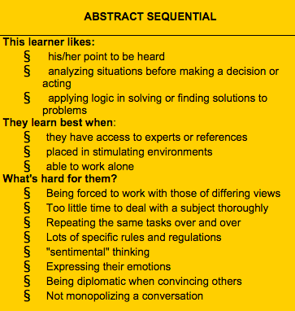

Rachel Yisle Lim

If you knew me before I started code school, you know I've always been studious, but I have also gone through weird phases of getting trouble with teachers. I have had my share of teachers basically asking me to shut up ("Please use your inside voice, Rachel"), and then other teachers (mostly during my years in college) asking me to speak up. I was either too quiet or too vocal. Mostly because I was categorized as a stereotypical Asian student by my peers, teachers, and sometimes even my parents, I always thought I was a passive, visual/aural learner. Little did I know, until a few weeks ago, that this is far from the truth.
The truth is, I am a kinesthetic learner with an abstract sequential thinking style. What does that mean? Well, according to some article on Google, I need "to move around and work manually with ideas" and I "sometimes have difficulty sitting still in class just listening." I learn more from doing and trying things for myself. In retrospect, this makes complete sense to me now. All throughout elementary to high school, I have always asked my teachers if I could use the bathroom or see the nurse. I fell asleep in class. In almost every class. Even as a teacher, I struggled with staying still and alert during teacher meetings. And if you knew me in college, you might have seen me dozing off right in front of the professor (I always sat in the front, thinking it would force me to stay alert and awake). Teachers and professors perceived this as me being a rude and disrespectful student. But it's really because I am a kinesthetic learner. I can stay still if necessary, but I prefer to move around as I please, doodling in my notes, using chalk/marker boards to study and think out loud, drawing diagrams, working with my hands, and having conversations. My mind tends to doze off if these learning preferences are not offered in a learning environment.
In addition to being a kinesthetic learner, I am also an abstract sequential thinker, according to this test I took.
As an abstract sequential thinker, I like to think theoretically, and often want to connect an idea to the "bigger picture" (whatever that means...). I like listening to experts who have solid facts backing their ideas. I like having the freedom to learn as I please.
It helps identifying my learning and thinking style--now, I can now strategize how I will learn throughout my time with DBC. During these first three weeks, I found myself struggling with the reading material. I found myself paying more attention to the material if it involved exercises that I could try on my own. While I prefer learning by doing, the reality is, reading what the experts have to say is a fundamental part of the learning process and it will not go away. With all of the above in mind, I will take these three intentional steps to support my learning style while also expanding the way I learn and think, to be adaptable to other styles. I don't want to use my style of learning as an excuse for why I keep leaving class to go to the bathroom. I want to train myself to build the stamina I need to be an effective learner in the following ways:
I'll write a post in a few weeks to update you on how these steps are working for me. Gonna go try it out now! Bye!